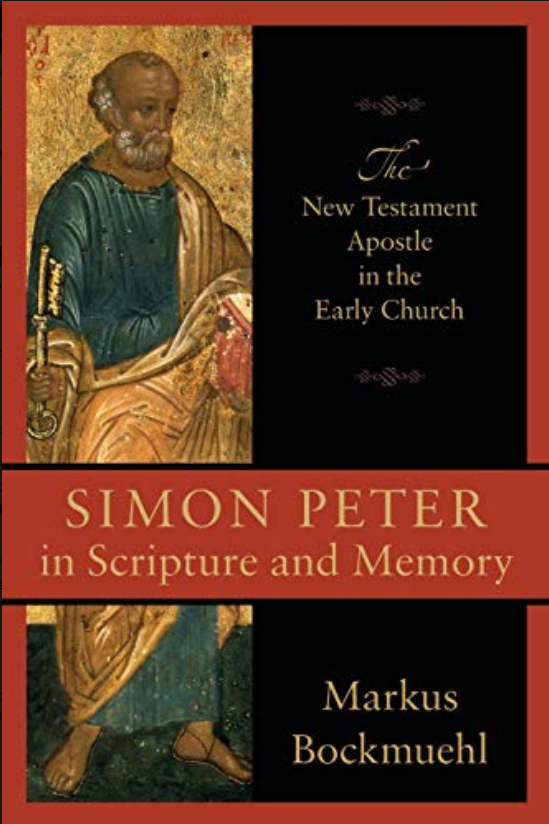

Simon Peter in Scripture and Memory: The New Testament Apostle In The Early Church
Desc: A world-class scholar argues that early Christian memory of Peter underscores his central role as a bridge-building figure holding together the diversity of first-century Christianity.
https://fr.b-ok.xyz/dl/16760833/7961f7?convertedTo=pdf
